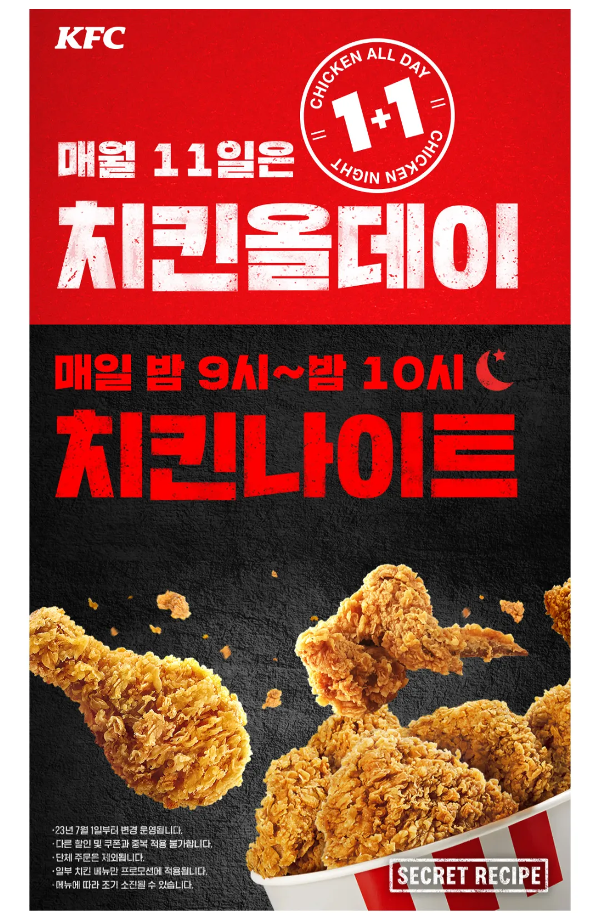
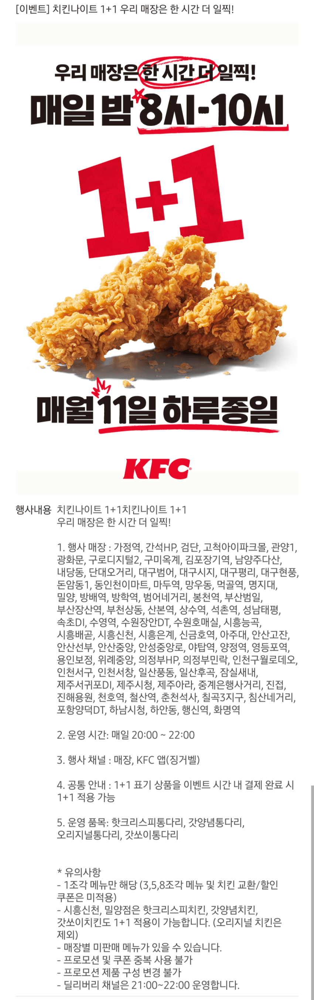
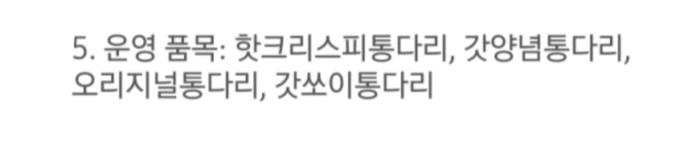
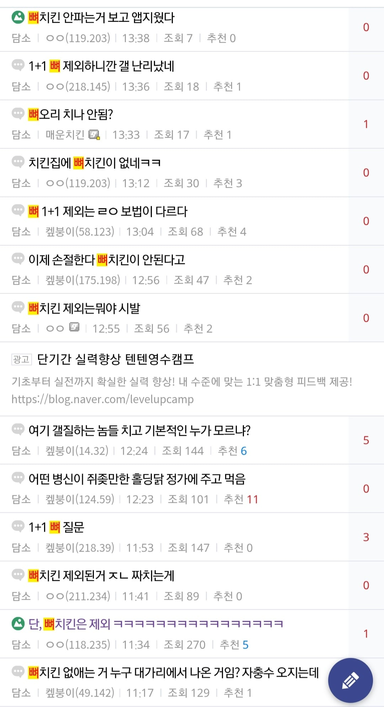
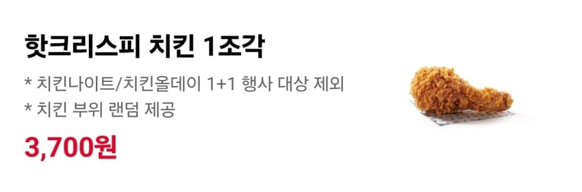

Kfc는 매일 밤 9시-10시 치킨나이트와
매달 11일 하루종일 치킨올데이로
치킨 1+1 이벤트를 함
오늘은 11일이라 치킨올데이 행사날인데

근데 kfc가 지난주에 이벤트랍시고 정책 하나를 바꿈
바로 일부매장은 치킨나이트를 9시에서 8시로 앞당겨 2시간 진행하는데

문제는 그 매장들은 1+1품목에서 뼈치킨을 제외하고
통다리순살로만 진행한다는거임
즉 뼈치킨은 1+1이 안된다는건데


문제는 치킨나이트를 8시부터 진행하는 지점은 치킨나이트뿐만 아니라
치킨올데이도 뼈치킨이 1+1제외됨
그래서 오늘 뼈치킨 사러갔다가 1+1제외라서 개빡친 사람들이 많아짐
나도포함
근데 지금 저 제외 매장도 점차 늘릴가능성이 높음
그럼 사실상 뼈치킨 1+1이 아예 사라질지도..
파파이스 지점만 많으면 파파이스 가는데 아오..
이 것 보다 충격적인게 신림점 치킨나이트 양념 다 제외됨 ㅜ 난 양념이 좋은데